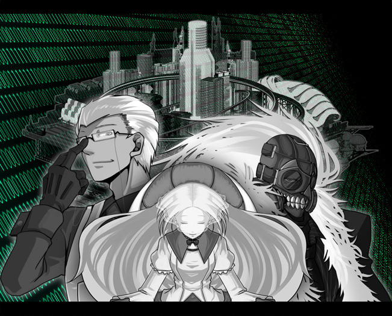

|
▼ラグナロク事件 ノーマル社会の維持をしてきた司法機関【 グングニル 】、  現在オルレアンとテセウスは 民主機構【 オルレアン 】、抑制機構【 テセウス 】となり各エリアの管理を言い渡され、 全体をグングニルが総括する形となって社会を形成している。 それぞれが互いを監視し、協力体制はとってはいるが、 個々や小規模での対立はしばしば起こる様である。 又、アンチ能力者【 シズカ＝タチバナ 】は研究協力という形で、 グングニル管理のもと、実質的には身柄を拘束されている。 ―― 未だ能力者と非能力者との確執はなくなってはいない。 |